概要
いま話題のChatGPT, GPT-4をアプリケーションに取り入れてみましょう。百聞は一件にしかずということでまずは簡単なチャットボット(LINE Bot)を作りつつ使い方を学んでいただければと思います！
当日の持ち物
- LINEがインストール済みのスマホ
- ChromeがインストールされたPC（Chromeのバージョンは最新のものを使っていただければと！）
事前準備
- GitHubアカウント作成
- Azureアカウント作成
- LINEアカウント作成(こちらのサイトでログインできるかどうかを確認ください)
- (推奨) Google Chrome の最新版のインストール
使用するサービス・ツール
- Node.js
- GitHub Codespaces
- Azure OpenAI Service（ChatGPT, GPT-4）
- Microsoft Azure Container Apps, Container Registry, Storage, Cosmos DB, Bicep
構成図
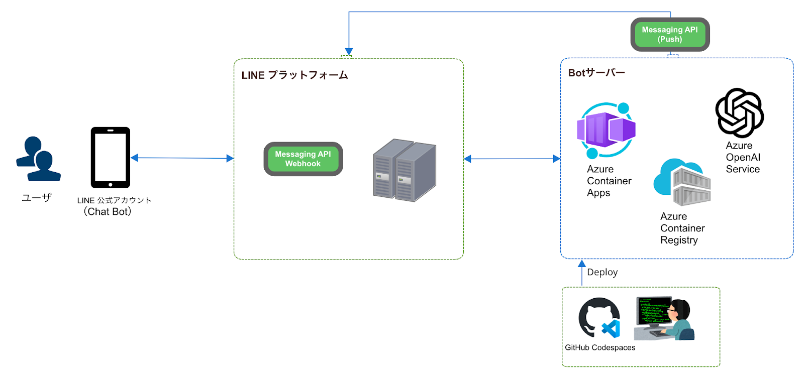
注意事項
若干、クラウド(Microsoft Azure)の課金が発生する可能性があります。それ以外は課金など発生しません。
アシスタントのセットアップとチャットセッションの動作確認
Azure OpenAI Studio上に移動します。サインインを求められるので運営から共有した情報でサインインをお願いいたします。
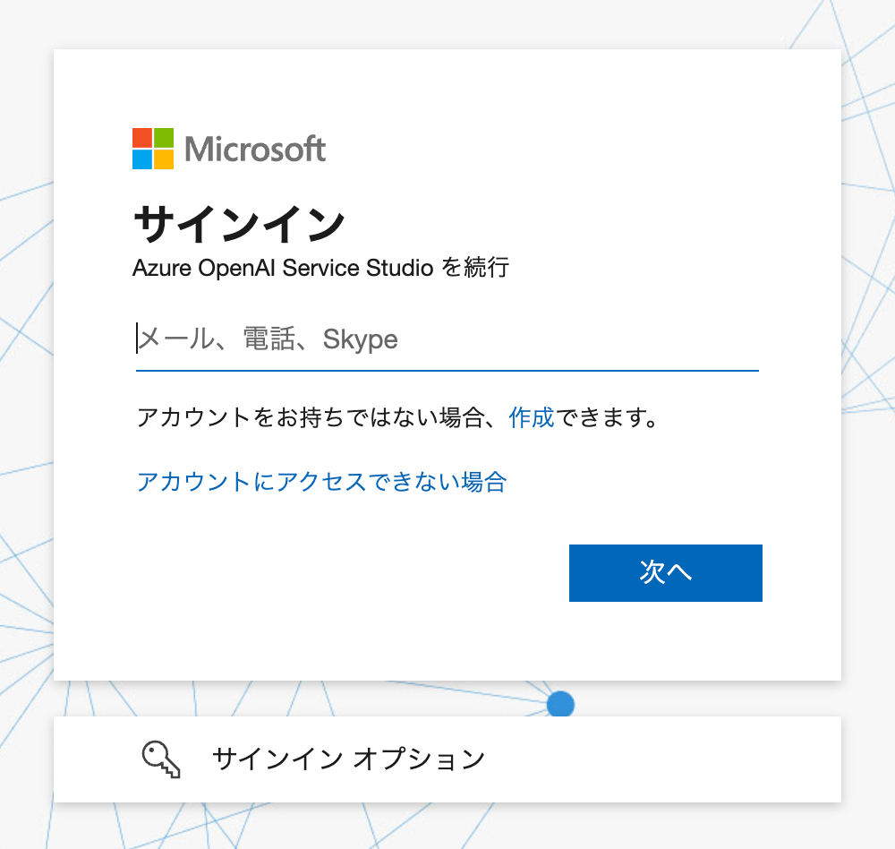
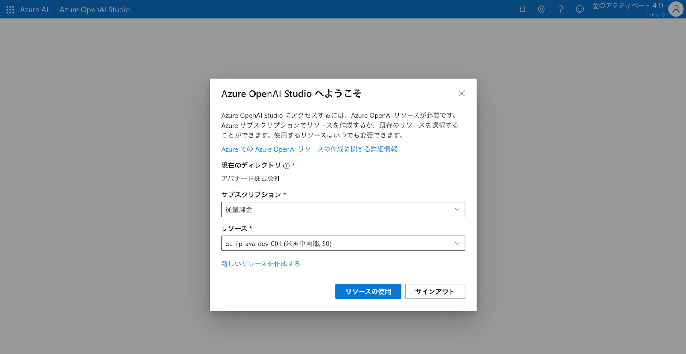
左メニューの「チャット」を選択してプレイグラウンドの画面へ移動します。
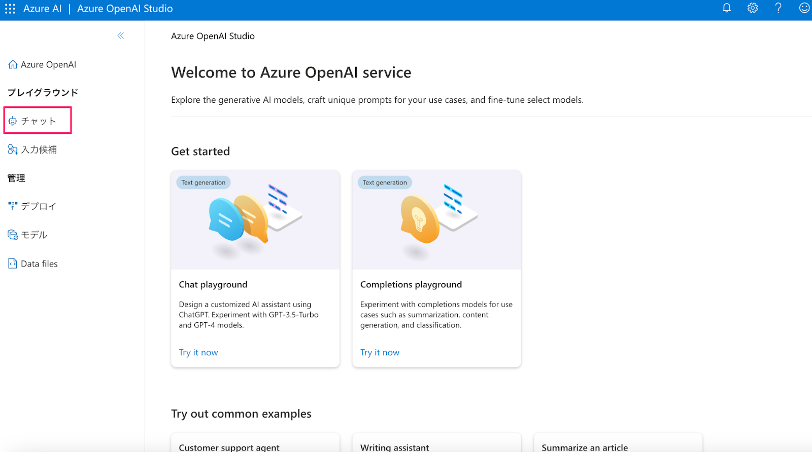
システムメッセージにてAIアシスタントのパーソナリティを事前定義します。変更したら保存ボタンを押すのを忘れないようにしましょう。
次に画面真ん中のチャットセッションにて、AIアシスタントの動作を確認してみましょう。
下記公式のドキュメントも参考にしてみてください。

なお、「チャットセッション」にある「コードの表示」を押すと、Playground上で入力した設定を使ってコードのサンプルを提示してくれます。
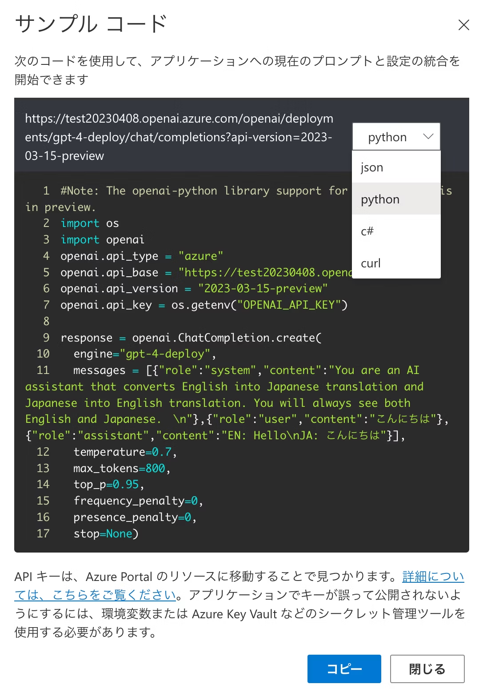
そしてこのタイミングでEndopointとkey、デプロイ名の情報をを取得しておきましょう。（後で使います）
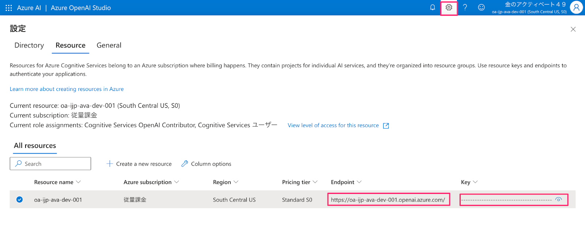
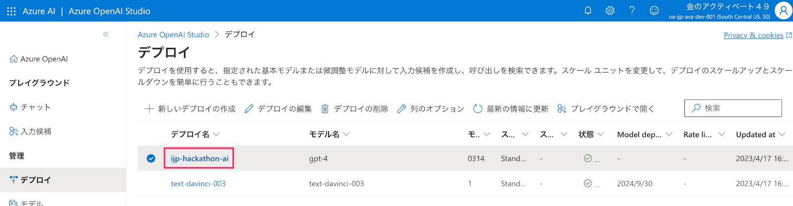
チャネルの作成スタート
https://developers.line.me/ja/services/messaging-api/ にアクセス。
「今すぐはじめよう」のボタンを押して進めていきましょう。
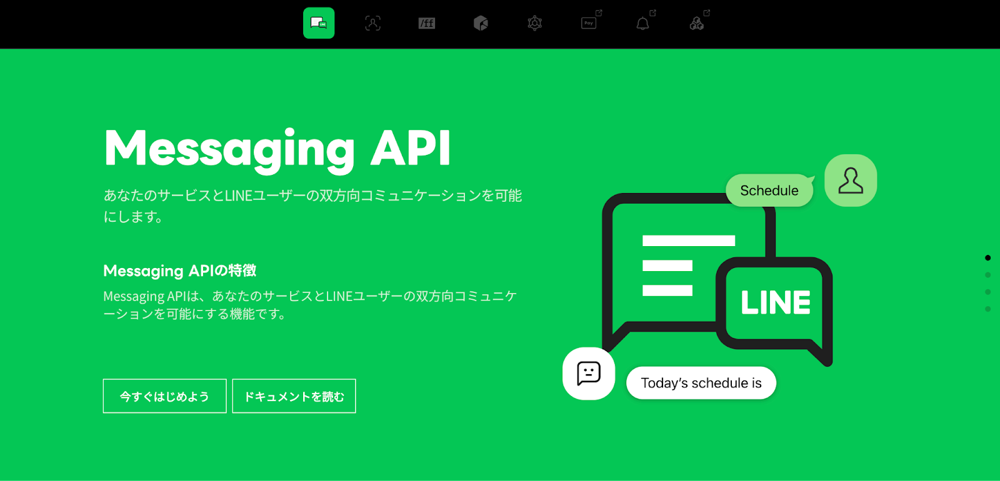
「LINEアカウントでログイン」を押してください。
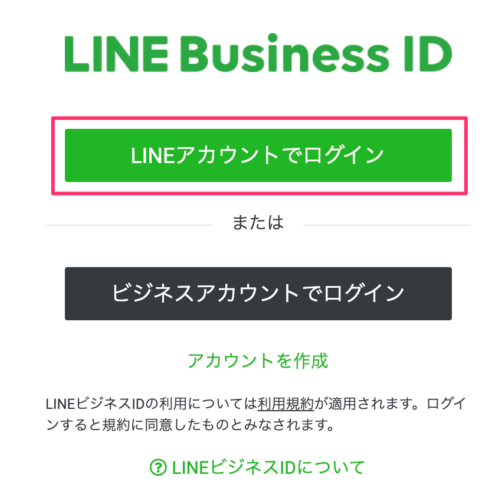
LINEのログインを求められるのでログインしてください。

チャネルの種類
Messaging APIになっているか確認します。

プロバイダ
既にプロバイダーを作っている場合 → 利用するプロバイダーを選択しましょう。
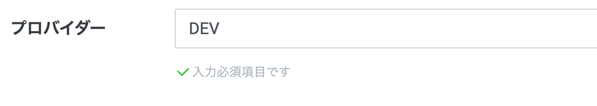
初めて → 新規プロバイダー作成を選択しプロバイダー名を入力しましょう。
（LINEという文字は含められません。）

会社・事業者の所在国・地域

チャネルアイコン
チャネルアイコンを登録しましょう。（今回は必須ではありません）

チャネル名、チャネル説明
下記を入力しましょう。
チャネル名：「HandsonBot」
チャネル説明：「HandsonBotです。」
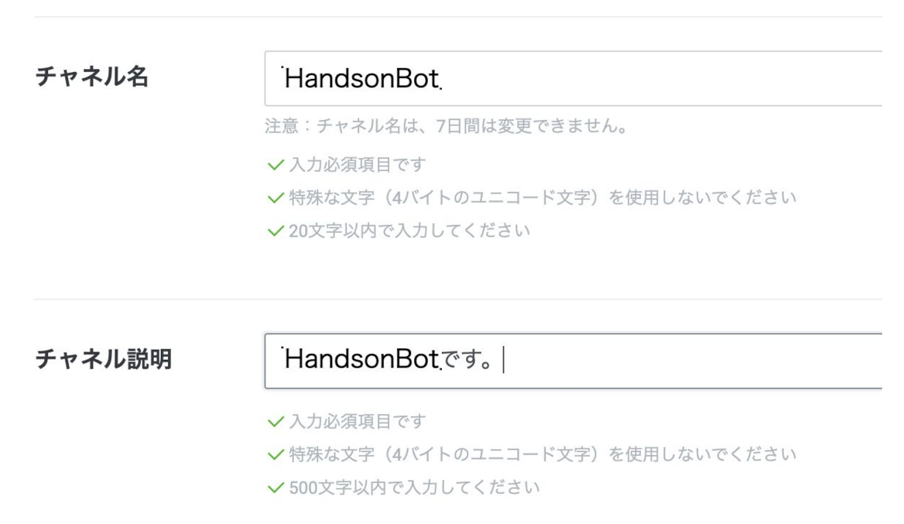
大業種、小業種

メールアドレス、プライバシーポリシーURL、サービス利用規約URL
メールアドレスを確認しましょう。
プライバシーポリシーURLとサービス利用規約URLは入力しなくても大丈夫です。

作成ボタン
下記２点の利用規約にチェックをして「作成」ボタンを押しましょう。

「OK」を押しましょう。

「同意する」を押しましょう。

LINE公式アカウント(LINE Bot)と友だちになる
QRコードで友だち追加
「Messaging API設定」タブに移動し、QRコードを読み取って、友だち追加をしましょう。

チャネルシークレット、アクセストークンの取得
「チャネル基本設定」タブからチャネルシークレットを、「Messaging API設定」タブからアクセスキーをそれぞれ取得します。
- チャネルシークレット


- アクセストークン


応答モードをOFFにする
LINE Official Account Manager 画面にアクセスして、Botの「応答モード」設定をOFFにします。（デフォルトの設定はONになっており、メッセージを送るたびにデフォルトのメッセージが返ってきてしまうため）


GitHub リポジトリのFork
https://github.com/mochan-tk/AzureOpenAI-GPT4-LINE-Bot-on-Azure-v2 にアクセス。
右上のForkボタンを押して自分のGitHubアカウントにリポジトリをコピーしてください。
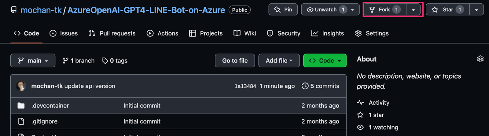
Ownerを自分のアカウントに選択し、「Create fork」ボタンを押してforkしてください。
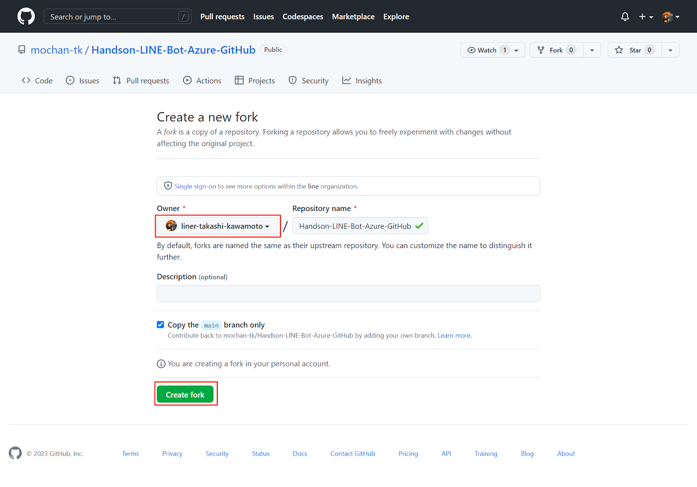
GitHub Codespacesの起動
fork後、緑色のCodeボタン > Create codespace on main ボタン を押して起動します

Port Foward設定とURLの取得
表示範囲を ポートの表示範囲 > Publicに変更します。
ローカルアドレス > コピーマーク を押してURLを取得しておきます。
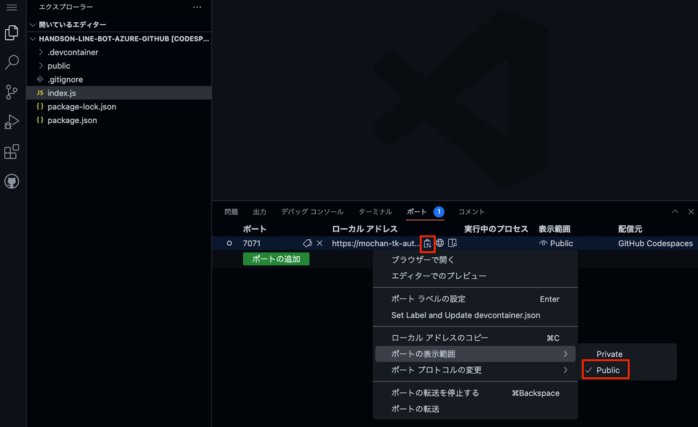
Botサーバーの用意
ターミナル上で下記のコマンドを実行していってください。
- 実行するコマンド
cd local
pip install -r requirements.txt
export LINE_CHANNEL_ACCESS_TOKEN=<your access token>
export LINE_CHANNEL_SECRET=<your secret key>
python app.pyWebhookの設定
LINE Developersのコンソール画面に戻って、「Messaging API設定」タブから上記で取得したURL + 「/callback」を設定します。これでLINEのBotを動かす準備は全て整いました！
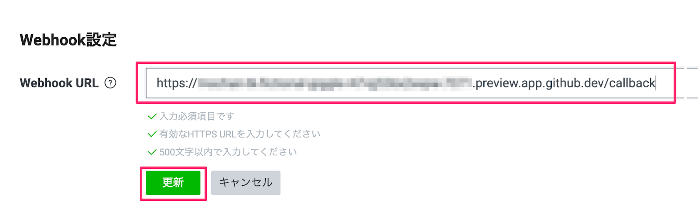

動作確認
さっそく動かしてみましょう。トーク画面からBotに対してメッセージを送るとオウム返しでメッセージが送られてきたと思います！

ACR（Azure Container Registry）の用意
ターミナル上で下記のコマンドを実行していってください。
- 実行するコマンド
cd /workspaces/AzureOpenAI-GPT4-LINE-Bot-on-Azure-v2
az login --use-device-code
## 下記を実行でAzureのサブスクリプションIDを取得
az account list \
--refresh \
--query "[].id" \
--output table
## <your subscription id>の部分を、上記で取得したAzureのサブスクリプションIDに置き換える
az account set --subscription <your subscription id>
group_name=20230602LineBot
az group create --name ${group_name} --location japaneast
az configure --defaults group=${group_name}
containerVer=v1
gitRepository=https://github.com/mochan-tk/AzureOpenAI-GPT4-LINE-Bot-on-Azure-v2.git
az deployment group create --name deployAcr01 --template-file containerRegistry.bicep \
--parameters containerVer=${containerVer} \
--parameters gitRepository=${gitRepository}
Botサーバーの用意
- 実行するコマンド
## ACRの名前取得
az deployment group show \
-g ${group_name} \
-n deployAcr01 \
--query properties.outputs.acrName.value
containerRegistryName=<上記で取得したACRの名前>
secret=<your secret>
access=<your access token>
appsPort=5000
aoaiApiKey=<your aoai api key>
aoaiApiBase=<your aoai api base url>
aoaiApiEngineName=ijp-hackathon-ai
## ココでrandomな値を取得 > https://1password.com/jp/password-generator/
random=<random value>
## secretとaccessはLINE Developersのチャネル設定でメモした値を入れる
az deployment group create --name deployPrj01 --template-file main.bicep \
--parameters containerVer=${containerVer} \
--parameters containerRegistryName=${containerRegistryName} \
--parameters random=${random} \
--parameters secret=${secret} \
--parameters access=${access} \
--parameters appsPort=${appsPort} \
--parameters aoaiApiKey=${aoaiApiKey} \
--parameters aoaiApiBase=${aoaiApiBase} \
--parameters aoaiApiEngineName=${aoaiApiEngineName}
## エンドポイントURLの取得
az deployment group show \
-g ${group_name} \
-n deployPrj01 \
--query properties.outputs.acaUrl.value
上記、実行後は下記のようにURLが払い出されるのでメモしておきます。（Webhookの設定で使います）
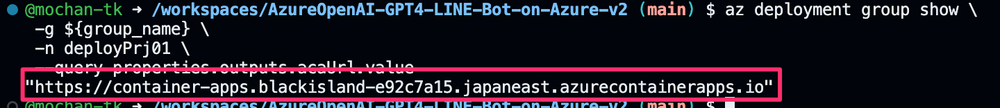
実行後のAzureリソースは下記のような構成。（※修正中）
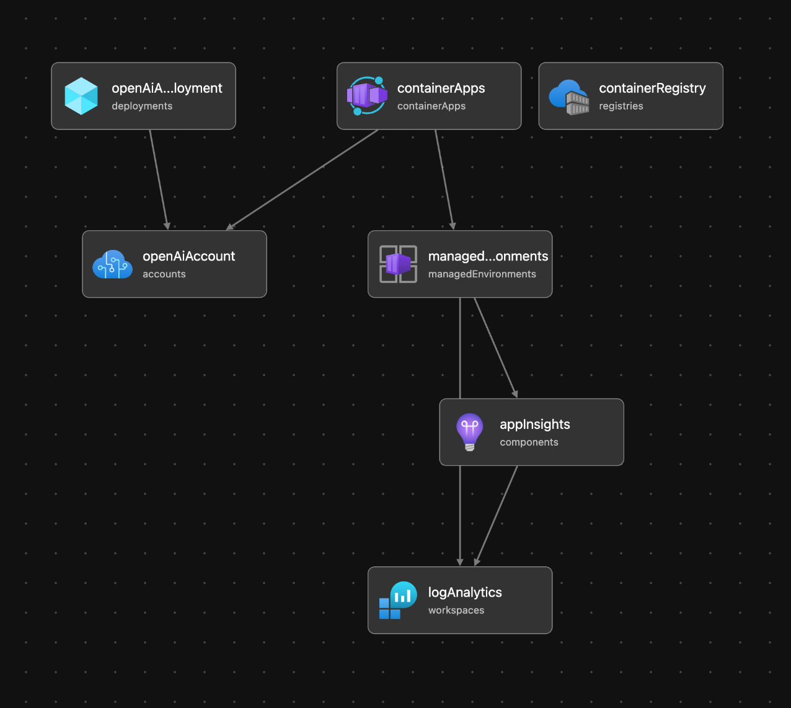
Webhookの設定
LINE Developersのコンソール画面に戻って、「Messaging API設定」タブから上記で取得したAzure FunctionsのURLを設定します。これでLINEのBotを動かす準備は全て整いました！
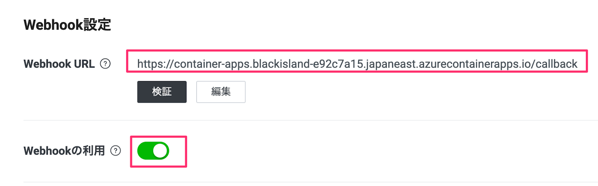
動作確認
さっそく動かしてみましょう。AIチャットボットにおもむろに色々と話しかけてみてください^^
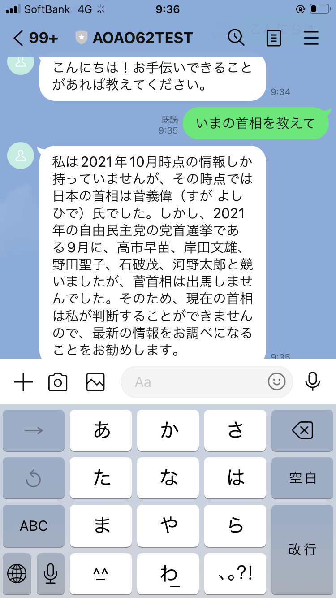
課金が気になる方は、下記のコマンドを実行してリソースグループごと作成したAzureのリソースを削除してください。
az group delete --name ${group_name}